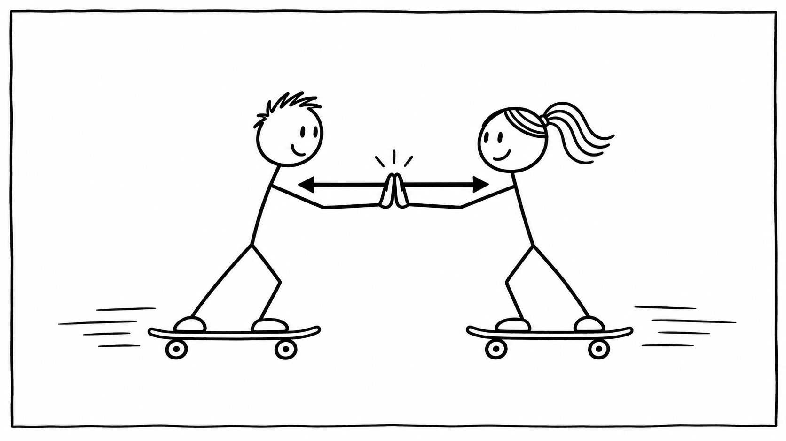

Station 4 · Newton 3
Actio und Reactio
Zu jeder Kraft gibt es eine gleich große Gegenkraft in die andere Richtung.
Zwei Jugendliche stehen auf Rollbrettern und drücken sich voneinander ab. Beide rollen auseinander. Warum? Jede Person übt eine Kraft auf die andere aus.

Ein Kräftepaar
Person A drückt Person B nach rechts. Gleichzeitig drückt B die Person A nach links. Diese beiden Kräfte entstehen zusammen. Sie sind gleich groß, zeigen in entgegengesetzte Richtungen und wirken auf verschiedene Körper.
Darum heben sie sich nicht gegenseitig auf: Für die Bewegung jeder Person betrachtet man nur die Kräfte, die auf diese Person wirken. Unterschiedliche Massen können trotz gleich großer Kräfte zu unterschiedlichen Beschleunigungen führen.